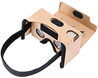

UNITY VR: GOOGLE CARDBOARD
A. GVR Set-Up |
B. Teleportation | Final Checklist
| C. Build to your Phone
D. Importing Custom 3D Animation:
Animated Door |
Animated Character

This tutorial covers basic steps for creating and building a VR Unity Project to explore for Google Cardboard VR. This requires Unity 2019.2.21f1.
NOTE: Google Cardboard does not work in Unity 2019.3 and above.
Make sure Andoid or iOS Module is installed in Unity Hub, along with sub-modules.
For the full experience get a Google Cardboard VR-phone viewer (available online for $10).
iOS only works if you have both a Mac computer and an iPhone or iPad.
APK works on all computers, and can be sent to the teacher for veiwing
[PART A] Setting up Unity for Google Cardboard (source)
1. Open Unity Hub. Create a new Unity 3D project wth Unity 2019.2.21. Name the Scene GVR_test.
2. From the GoogleVR Github download the GoogleVRForUnity package.
In Unity: Assets > Import Package > Custom, find GoogleVRForUnity.
(In the Import Unity Package window optionally uncheck "Demos" to save space, but do not uncheck the Demos folder under Beta).Hit [Import].
3. Download and add these four scripts to the Assets folder (drag into the Project panel Assets folder):
4. Open File > Build Settings.
Hit [Add Open Scenes].
Choose Android or iOS to make a mobile app,
and hit [Switch Platform].
5. At the bottom of Build Settings hit [Player Settings] to set them for
Android APK:
| Player Settings > XR Settings |
enable Virtual Reality Supported |
| Player Settings > XR Settings > Virtual Reality SDKs |
add [+] Cardboard |
| Player Settings > Other Settings |
Set Minimum API Level to Android 4.4 "Kit Kat" (API Level 19) or higher.
Set Android TV Compatibility = off |
| Player Settings (top) |
set CompanyName and ProductName to your name (humpCap notation) |
| Player Settings > Package Name |
com.CompanyName.ProductName |
Close out of player settings and Build Settings [x].
|


 Click for full image Click for full image |
6. From the new GoogleVR folders in the Project, drag to Hierarchy:
Assets > GoogleVR > Prefabs > GvrEditorEmulator
Assets > GoogleVR > Prefabs > Headset > GvrHeadset
7. Set-up the Player Object:
a. Create a GameObject > Empty Game Object. Name it "Player." In the Inspector hit the gear icon to reset Transforms.
b. Select Main Camera, Reset Transforms, set near clipping plane to 0.1, parent below Player (drag onto it).
c. With Main Camera selected, in Inspector hit [Add Component] to search and apply: GvrPointerPhysicsRaycaster.
d. From Project drag to Hierarchy and parent to Camera:
Assets > GoogleVR > Prefabs > Cardboard > GvrReticlePointer.
8. Create the Ground:
a. Add GameObject > 3D > Cube, name it "Ground."
b. Scale: 20 x 0.2 x 20, Position y = -1.
c. RightClick the Project panel (under Assets) to create a Material, name it Ground_m, apply to the Ground (drag onto it) and in the Inspector set Albedo color to something darker.
|

|
TESTING TIME!
For reference, create a cube and move forward on the Z-axis.
Select GvrEditorEmulator to see Cardboard controls in Inspector (hold [Alt/Option] move mouse to look around).
Hit Play to try them, and to see a small, default Player reticule. showing the center of player vision/focus.
Turn off Play to resume (remember: any changes while in play mode are not saved) |
|
[PART B] Teleportation
(source video)
Cardboard does not support real-body spatial movement, so the best way to move in GVR is to teleport.
1. Add to Hierarchy to enable interactions:
Assets > GoogleVR > Prefabs > EventSystem > GvrEventSystem.
2. Create the animate-able Reticule in a Canvas Image:
a). Download and drag Unity_Reticule.png into the Project panel (or make your own: 32x32 pixels).
In the Inspector set Texture Type from Default to Sprite (2D and UI). Hit [Apply]
b). Add to the Hierarchy: GameObject > UI > Canvas. With the Canvas selected, add GameObject > UI > Image.
c). In Hierarchy select Canvas and in Inspector RightClick Graphic Raycaster to Remove Component.
d). Under Canvas Component: Change Canvas RenderMode from "Screen Space - Overlay" to "Screen Space - Camera". Drag Main Camera into the Render Camera slot (so the reticule will be centered in each view on your phone). Set Plane Distance low (0.5).
e). In Hierarchy select Image and in Inspector Reset Transforms. Drag Unity_Reticule.png into the "Source Image" slot.
f). Change Image Type from "Simple" to "Filled."
In Game view Scrub filled-amount bar to see change, then set = 0.
3. Select any object in the Hierarchy, and in the Inspector find the Tag rolldown at the top. Click "Untagged" and choose "Add Tag" to create 3 new tags (don't yet apply): TeleportHere, RotateThis, ColorSwitch.
|


|
4. Apply the GVR_Gaze.cs script to the Player.
GVR_Gaze.cs:
using System.Collections;
using System.Collections.Generic;
using UnityEngine;
using UnityEngine.UI;
public class GVR_Gaze : MonoBehaviour {
public Image imgGaze;
public float totalTime = 1f;
bool gvrStatus;
float gvrTimer;
public int distanceOfRay = 50;
private RaycastHit rayHit;
void Update () {
//create a ray to check distance:
Ray ray = Camera.main.ViewportPointToRay(new Vector3(0.5f, 0.5f, 0f));
if (Physics.Raycast(ray, out rayHit, distanceOfRay)){
//code to fill reticule:
if (gvrStatus){
gvrTimer += Time.deltaTime;
imgGaze.fillAmount = gvrTimer / totalTime;
}
//code to teleport player:
if (imgGaze.fillAmount == 1 && rayHit.transform.CompareTag("TeleportHere")){
rayHit.transform.gameObject.GetComponent<GVR_Teleport>
().TeleportPlayer();
}
//code to activate transform in another object:
if (imgGaze.fillAmount == 1 && rayHit.transform.CompareTag("RotateThis") && gvrStatus){
rayHit.transform.gameObject.GetComponent<GVR_Rotate>
().ChangeSpin();
gvrStatus = false;
}
//code to activate color change in another object:
if (imgGaze.fillAmount == 1 && rayHit.transform.CompareTag("ColorSwitch") && gvrStatus){
rayHit.transform.gameObject.GetComponent<GVR_Color>
().ChangeColor();
gvrStatus = false;
}
}
}
public void GVROn(){
gvrStatus = true;
}
public void GVROff(){
gvrStatus = false;
gvrTimer = 0;
imgGaze.fillAmount = 0;
}
} |
5. With Player still selected in the Hierarchy, drag the Image object (under Canvas) from the Hierarchy into the GVR_Gaze Img Gaze script slot in the Inspector.
6. Create a Teleport Destination Cube:
a). Create a new GameObject > 3D > Cube, name it "Teleport."
b). Apply the tag "TeleportHere" to the cube.
c). Scale as desired, position onto one corner of the Ground.
d). At bottom of Inspector, hit [Add Component], Event > Event Trigger to handle the reticule:
(1). Hit [Add New Event Type] to add two events: PointerEnter and Pointer Exit.
(2). Click the [+] icons on each.
To each [None (Object)] slot drag the Player.
(3). Under PointerEnter: Hit [No Function] to choose GVR_Gaze and then GVROn( ).
(4). Under PointerExit: Hit [No Function] to choose GVR_Gaze and then GVROff( ). |
 |
TESTING TIME: Hit Play to test, and we should see the Reticule activate when we hover over the teleport destination block.
Now, for actual teleportation:
7. Apply the GVR_Teleport.cs script to the Teleport object.
Drag Player object from the Hierarchy into the Player script slot.
GVR_Teleport.cs:
using System.Collections;
using System.Collections.Generic;
using UnityEngine;
public class GVR_Teleport : MonoBehaviour {
public GameObject player;
public void TeleportPlayer(){
player.transform.position = new Vector3 (transform.position.x, transform.position.y + 1.5f, transform.position.z);
}
} |
8. With the Teleport cube still selected, drag the Player object from the Hierarchy into the GVR_Teleport Player script slot.
Duplicate the Teleport cube and put these copies around your space, some at ground level, some higher!
TESTING TIME! Hit Play to test teleportation when gazing at the Teleport Objects.
Let's add other VR actions based on gaze: a Transform change and a Color change on another object:
9. Create a Cube, name it "ChangeCube."
a. Apply either the "RotateThis" or "ColorSwitch" tags to the cube.
b. Add Component Event Trigger, hit [Add New Event Trigger] to add PointerEnter and Pointer Exit.
c. Click the [+] icons on each, and then drag the Player into each [None (Object)] slot.
d. Under PointerEnter: Hit [No Function] to choose GVR_Gaze and then GVROn().
e. Under PointerExit: Hit [No Function] to choose GVR_Gaze and then GVROff().
10. Apply either the GVR_Rotate.cs or GVR_Color.cs to the ChangeCube object:
GVR_Rotate.cs (set Tag to RotateThis):
using System.Collections;
using System.Collections.Generic;
using UnityEngine;
public class GVR_Rotate : MonoBehaviour {
public float spinForce = 45;
void Update(){
transform.Rotate(0, spinForce * Time.deltaTime, 0);
}
public void ChangeSpin(){
spinForce = -spinForce;
}
} |
|
GVR_Color.cs (set Tag to ColorSwitch):
using System.Collections;
using System.Collections.Generic;
using UnityEngine;
public classGVR_Color : MonoBehaviour {
public Renderer rend;
public Vector3 clrs;
void Start(){
rend = gameObject.GetComponent<Renderer>();
}
public void ChangeColor(){
clrs.x = Random.Range (0.5f,1f);
clrs.y = Random.Range (0.5f, 1f);
clrs.z = Random.Range (0.5f, 1f);
rend.material.color = new Color(clrs.x, clrs.y, clrs.z);
}
} |
|
TESTING TIME! Hit Play to test the cube rotation when gazing at the RotateCube.
|
PROBLEM SOLVING:
Are your teleportation or rotation cubes not appearing to function?
Check you have all the elements in the Hierarchy (see image to the right).
In particular, check that you added GvrEventSystem to the Hierarchy.
Check your cube or other target object has:
[ ] The Tag set to TeleportHere, RotateThis, or ColorSwitch.
[ ] The action script applied (GVR_Teleport.cs or GVR_Rotate.cs)
[ ] The Player dragged into the script slot (this solves the console error 'Unassigned Reference Exception: The variable player of GVR_Teleport has not been assigned')
[ ] An Event Trigger Component applied.
[ ] Added Events [+] for Pointer Enter and Pointer Exit.
[ ] The Player dragged into the [None (Object)] slots for each event.
[ ] The [No Function] slots set to GVR_Gaze.cs script and GVROn / GVROff Methods.
|

|
|
[PART C-1] Export a build to an Android Phone (source)
1. In Unity File > Build Settings, export the APK by hitting [Build].
2. Upload the APK to an online repository (like Piazza).
3. From your Android phone click the APK link to load the APK package to your phone.
DoubleClick to install (and accept).
4. Run your APK to play your VR project. Try it in your Google Cardboard viewer!
|

|
[PART C-2] Export a build to an iPhone (source and Quikstart Guide)
1. Install the newest version of X-Code (Xcode comes on Mac computers, but you need the newest).
In Unity: Note in Unity Build Settings the item "Run in Xcode" is set to Latest Version by default. In Build Settings hit [Build] to choose location and name. expect about 3-5 minutes to build.
2. On your computer open the build folder. DoubleClick this file to open your project in the Xcode app (NOT .xcodeproj): Unity-iPhone.xcworkspace. In Xcode, the loading bar at the top will take time for "Indexing /Processing files" until it changes to "Unity-iPhone Ready".
3. In left panel, select the Unity-iPhone folder (top) to load the Editor into center.
4. File > Preferences > Accounts, sign into your Apple ID (what you use for iTunes). This allows you to build the game to your own phone for testing (can't be shared with other users).
5. In the Big middle Xcode Editor window:
a. Under Signing set "Team" from None to "Personal Team" (shows your name).
b. Under deployment Info > Device Orientation turn off Portrait and Upside Down, leave on Landscape Left and Landscape Right.
Leave Devices as "Universal."
c. Under Identity note Bundle Identifier (Should be same as in Unity: do not change).
6. Unlock your phone, click "Trust this Computer" and enter your passcode. In the upper left of Xcode, click "Generic iOS Device" and change it to your "iPhone".
NOTE: If Xcode says "iPhone (untrusted)," it may be because your phone is still locked.
If it says "(unavailable)", your phone OS may be newer than your version of Xcode supports. To confirm, check Window > "Devices and Simulators". The best solution is usually to update Xcode, BUT if your phone is newer that the latest Xcode, try this hack:
(a). In the Finder go to Application, RightClick Xcode.app to choose "Show Package Contents".
Then go to Applications/Xcode.app/Contents/ Developer/Platforms/iPhoneOS.platform/DeviceSupport/
(b). The numbered folders are iOS versions. Duplicate the newest version available, rename it for your later version (like 13.3).
(c). You may then need to restart Xcode, reboot the computer, and reconnect your iPhone. |
7. Hit the Play button in the upper left corner of Xcode. The game should build in 3-5 minutes (yellow triangle errors are fine, but a red stopsign error stops the build). Once completed, the build should run on your connected iPhone. Try it in your Google Cardboard viewer!
|


 Click for full image Click for full image
 Click for full image
Click for full image
|
|
Quick Phone Testing (source)
NOTE: This app is notoriously fickle. Do not count on it working.
1. To your smartphone download/install Unity Remote App (Google Play Store or iTunes). Launch on your phone for instructions.
2. Plug your phone into your computer using a data microUSB (or iPhone Lightning), be sure phone is awake / not in locked state.
3. On Android be sure USB Debugging is enabled:
a. On the device, go to Settings > About <device>.
b. Tap the Build number seven times to make Settings > Developer options available.
c. Turn on "Developer Options" and turn on USB Debugging. TIP: You could also enable Stay Awake, to prevent sleeping while plugged into the USB port.
4. In Game View, set Aspect Ratio to "Free Aspect" and "Remote (Not Connected)".
5. Go to the Unity Editor settings (menu: Edit > Project Settings > Editor) and in the Unity Remote settings, switch the Device to "Any Android Device" or "Any iOS Device". Restart your Unity project.
6. IMPORTANT: Turn off phone connection when not testing, or computer keyboard may not work :).
|
 |
|